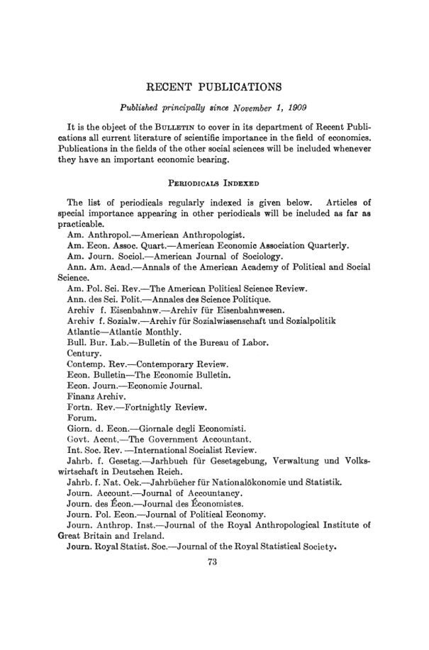

O Bulletin de março de 1910: a associação vota criar a AER
Leitura: 4 min
O balanço dos 25 anos e o voto que criou a American Economic Review, a sétima lista de teses em andamento, com mais de 150 nomes, e 29 resenhas, de Fisher a Simmel.


A primeira nota de março de 1910 faz o balanço da celebração dos 25 anos da associação e a chama de a reunião mais notável de sua história. Estiveram na abertura o governador Charles Evans Hughes e o prefeito McClellan.
A decisão central foi sobre publicações. A associação votou criar, até 1º de janeiro de 1911, uma revista que substituiria as publicações existentes, com artigos, resenhas e notas bibliográficas; monografias sairiam como suplementos.
Nas palavras da nota, “um novo periódico chamado The American Economic Review”. (a new journal to be called The American Economic Review)
O que mais contavam as notas?
Há registros de morte de James Barr Ames, deão da Harvard Law School, e do economista indiano R. C. Dutt, autor de histórias econômicas da Índia sob domínio britânico. A morte de Léon Walras é anunciada, com obituário prometido para o número seguinte. Uma nota assinada E. R. A. S. traça a carreira de Nicholas Gerard Pierson, da presidência do Banco dos Países Baixos ao cargo de primeiro-ministro.
Molinari, no 91º ano de vida, deixou a direção do Journal des Économistes, confiada a Yves Guyot. C. W. A. Veditz foi chamado a Yale para os cursos de economia de corporações e seguros do falecido Zartman. Os prêmios Hart Schaffner & Marx de 1909 foram para estudos sobre orçamentos de famílias operárias, regulação de trustes, acidentes de trabalho e a retomada dos pagamentos em espécie em 1879.
Quem fazia doutorado em economia?
A sétima lista de teses em andamento, datada de 1º de janeiro de 1910, segue o formato das anteriores: nome, formação, tema e data provável de conclusão. São mais de 150 nomes em 11 instituições, com Columbia à frente.
Os temas mostram as agendas. Na Johns Hopkins, quase todas as teses tratam de sindicatos americanos. John Maurice Clark estuda a teoria das tarifas ferroviárias; Warren Milton Persons, método estatístico e estatística econômica. Shridhar V. Ketkar, de Cornell, aparece com a tese já publicada sobre a história das castas na Índia, resenhada no mesmo número.
Que livros foram resenhados?
São 29 resenhas. T. N. Carver abre com a Introduction to Economics de Alvin S. Johnson. E. L. Bogart resenha os dois primeiros volumes da Documentary History of American Industrial Society, Plantation and Frontier, de Ulrich B. Phillips.
O trabalho tem peso. John R. Commons resenha o volume de Sydney J. Chapman sobre salários e emprego e o estudo de Norman B. Dearle sobre o desemprego na construção civil de Londres.
Para Commons, o livro de Dearle é “um modelo do tipo de trabalho necessário” para tratar do desemprego. (a model of the kind of work that is needed)
Em finanças públicas, James E. Boyle resenha a terceira edição da Introduction to Public Finance de Carl C. Plehn, e N. I. Stone, o livro de Edward Porritt sobre o protecionismo no Canadá. Allyn A. Young resenha o relatório de Irving Fisher sobre a vitalidade nacional. Fecham a seção estatística, população e sociologia, de Simmel a Dealey.
Como se organizava a bibliografia?
A seção Recent Publications reúne obras publicadas principalmente desde 1º de novembro de 1909, precedida da lista de periódicos indexados.
Na minha leitura
Na minha leitura, o número de março de 1910 marca a passagem de uma associação que publicava monografias para uma que manteria uma revista geral.
A resenha de Young sobre Fisher traz a questão de método mais durável. Para dar valor à saúde pública, Fisher capitaliza os ganhos futuros descontados de quem morre por causas evitáveis, incluindo os “ganhos” das donas de casa, e chega a uma perda anual mínima de US$ 1 bilhão. É o embrião do valor econômico da vida: convence quem mede tudo em dinheiro, mas depende inteiramente das hipóteses de desconto e de renda.
Glossário
- Pagamentos em espécie
- conversão das notas em moeda metálica; nos Estados Unidos, retomada em 1879.
- Capitalização
- cálculo do valor presente de uma série de ganhos futuros descontados.
- Pequena propriedade (small holding)
- lote agrícola de pequena área, objeto da lei inglesa de 1907 sobre pequenas propriedades e loteamentos.
Artigos desta edição
- Personal and Miscellaneous Notes — editores (pp. 1–11). Balanço da celebração dos 25 anos, decisão de criar a American Economic Review, nomeações, prêmios, notas sobre mortes de Ames, Dutt e Walras e nota biográfica sobre N. G. Pierson. JSTOR
- Seventh List of Doctoral Dissertations in Political Economy in Progress in American Universities and Colleges, January 1, 1910 — compilada pelo Economic Bulletin (pp. 12–20). Lista por instituição, com nome, formação, tema e data provável de conclusão de cada candidato; mais de 150 nomes em 11 instituições. JSTOR
- Alvin S. Johnson, Introduction to Economics — T. N. Carver (pp. 21–23). Exposição compacta dos resultados da análise econômica moderna, com ênfase teórica e exemplos deixados ao professor. JSTOR
- Frank Tracy Carlton, Education and Industrial Evolution; Economic Influences upon Educational Progress in the United States — Charles DeGarmo (pp. 23–26). Dois livros que atribuem a criação e o desenvolvimento da escola pública americana sobretudo a forças econômicas. JSTOR
- Ulrich B. Phillips, Plantation and Frontier (Documentary History of American Industrial Society, vols. I–II) — E. L. Bogart (pp. 26–29). Primeiros volumes de uma coleção documental sobre a história industrial e do trabalho nos Estados Unidos, com prefácio de Ely e introdução de John B. Clark. JSTOR
- Anna Youngman, The Economic Causes of Great Fortunes — G. P. Watkins (pp. 29–31). Estudo das fortunas de John Jacob Astor e Jay Gould e dos grupos ligados à Standard Oil e a Morgan. JSTOR
- A. Abram, Social England in the Fifteenth Century — N. S. B. Gras (pp. 31–32). Tese da Universidade de Londres que vê no comércio e no espírito comercial o fator dominante do século XV inglês. JSTOR
- Albert C. Freeman, Small Estate Management — John Lee Coulter (pp. 32–33). Livro sobre a administração de pequenas propriedades rurais, no contexto do movimento de volta à terra na Grã-Bretanha. JSTOR
- Edwin A. Pratt, Small Holders: What They Must Do to Succeed — James B. Morman (pp. 34–35). Guia para os novos pequenos proprietários surgidos após a lei inglesa de 1907, com um capítulo sobre a revitalização da vida rural. JSTOR
- Max Turmann, Les Associations Agricoles en Belgique, 2ª ed. — James B. Morman (pp. 36–37). Origem e expansão das cooperativas e associações agrícolas belgas, com um resumo da legislação. JSTOR
- Charles S. Potts, Railroad Transportation in Texas — Frank Haigh Dixon (pp. 37–39). História e situação do transporte ferroviário no Texas, estado conhecido pelo caráter radical de sua regulação. JSTOR
- W. F. Gephart, Transportation and Industrial Development in the Middle West — E. L. Bogart (pp. 39–40). Estudo do desenvolvimento industrial de Ohio entre 1800 e a Guerra Civil à luz do transporte. JSTOR
- James O. Fagan, Labor and the Railroads — Frank Haigh Dixon (pp. 41). Continuação das Confessions of a Railroad Signalman, com críticas aos sindicatos ferroviários. JSTOR
- Sydney J. Chapman, Work and Wages, Part II: Wages and Employment — John R. Commons (pp. 41–44). Continuação da obra de Lord Brassey sobre sindicatos, arbitragem, desemprego, seguro operário e aposentadorias em vários países. JSTOR
- Norman B. Dearle, Problems of Unemployment in the London Building Trades — John R. Commons (pp. 44–45). Estudo detalhado do desemprego num único ramo, a construção civil de Londres. JSTOR
- Carl C. Plehn, Introduction to Public Finance, 3ª ed. — James E. Boyle (pp. 45–47). Nova edição de um texto de finanças públicas dividido em despesa, receita, dívida e administração financeira. JSTOR
- Edward Porritt, Sixty Years of Protection in Canada (1846–1907) — N. I. Stone (pp. 47–51). História detalhada da política tarifária canadense desde a revogação das leis dos cereais na Inglaterra. JSTOR
- Irving Fisher, Report on National Vitality: Its Wastes and Conservation — Allyn A. Young (pp. 51–53). Relatório para a National Conservation Commission sobre mortalidade e doenças evitáveis, com uma estimativa de suas perdas econômicas. JSTOR
- Ferdinand Goldstein, Die Übervölkerung Deutschlands und ihre Bekämpfung — William B. Bailey (pp. 53–55). Livro que vê na superpopulação o maior perigo para a Alemanha e propõe medidas para combatê-la. JSTOR
- Société de Statistique de Paris, volume do cinquentenário — William B. Bailey (pp. 55–56). Volume comemorativo do cinquentenário da sociedade e da sessão do Instituto Internacional de Estatística, com uma história da estatística na França. JSTOR
- Walter Heape, The Proportion of the Sexes Produced by Whites and Colored Peoples in Cuba — William B. Bailey (pp. 56–58). Estudo publicado nas Philosophical Transactions da Royal Society sobre a razão de sexos ao nascer em Cuba, com estatísticas de 1904 a 1906. JSTOR
- Philip A. Parsons, Responsibility for Crime — Walter E. Lagerquist (pp. 58–59). Síntese e interpretação dos estudos de sociologia criminal sobre as causas e a prevenção do crime. JSTOR
- Morris Hillquit, Socialism in Theory and Practice — Charles C. Williamson (pp. 59–61). Livro sobre socialismo, ética, direito e Estado, com uma discussão da política socialista. JSTOR
- Shridhar V. Ketkar, The History of Caste in India — Ulysses G. Weatherly (pp. 61–62). Monografia introdutória de uma série sobre o sistema de castas, baseada nas leis de Manu. JSTOR
- W. E. Burghardt Du Bois (ed.), The Negro American Family — Ulysses G. Weatherly (pp. 62–63). Décimo terceiro volume das publicações da Atlanta University, com abordagem histórica, descritiva e estatística da família negra americana. JSTOR
- Georg Simmel, Soziologie — Charles A. Ellwood (pp. 63–66). Tratado de Simmel sobre as formas de socialização, que o resenhista situa no corpo comum da teoria sociológica. JSTOR
- Alfred P. Schultz, Race or Mongrel — Charles A. Ellwood (pp. 66–67). Livro que aplica a filosofia social de Gobineau a problemas históricos e contemporâneos; Ellwood contesta seus fundamentos biológicos e etnológicos. JSTOR
- James Quayle Dealey, Sociology, Its Simpler Teachings and Applications — Edward C. Hayes (pp. 67–69). Livro-texto elementar de sociologia, de um professor da Brown University. JSTOR
- Lincoln Steffens, Upbuilders — Clinton Rogers Woodruff (pp. 69–70). Livro sobre os construtores da reforma cívica, que o próprio Steffens apresenta como a antítese do muckraking. JSTOR
- A. Maurice Low, The American People: A Study in National Psychology — Cecil C. North (pp. 70–72). Estudo da vida americana por um correspondente de jornais ingleses, fruto de nove anos de observação. JSTOR
- H. A. Bruce, The Romance of American Expansion — E. L. Bogart (pp. 72). Narrativa da expansão territorial americana organizada em torno de figuras como Boone, Jefferson, Jackson, Seward e McKinley. JSTOR
- Recent Publications (pp. 73–130). Bibliografia corrente, sobretudo de obras publicadas desde 1º de novembro de 1909, precedida da lista de periódicos indexados, com livros e artigos por seção temática. JSTOR
Fontes
- Personal and Miscellaneous Notes (pp. 1–11). JSTOR · Internet Archive (PDF)
- Seventh List of Doctoral Dissertations in Political Economy in Progress in American Universities and Colleges January 1, 1910 (pp. 12–20). JSTOR · Internet Archive (PDF)
- [untitled] The Economic Bulletin, (1910-03-01), pages 21-23 (pp. 21–23). JSTOR · Internet Archive (PDF)
- [untitled] The Economic Bulletin, (1910-03-01), pages 23-26 (pp. 23–26). JSTOR · Internet Archive (PDF)
- [untitled] The Economic Bulletin, (1910-03-01), pages 26-29 (pp. 26–29). JSTOR · Internet Archive (PDF)
- [untitled] The Economic Bulletin, (1910-03-01), pages 29-31 (pp. 29–31). JSTOR · Internet Archive (PDF)
- [untitled] The Economic Bulletin, (1910-03-01), pages 31-32 (pp. 31–32). JSTOR · Internet Archive (PDF)
- [untitled] The Economic Bulletin, (1910-03-01), pages 32-33 (pp. 32–33). JSTOR · Internet Archive (PDF)
- [untitled] The Economic Bulletin, (1910-03-01), pages 34-35 (pp. 34–35). JSTOR · Internet Archive (PDF)
- [untitled] The Economic Bulletin, (1910-03-01), pages 36-37 (pp. 36–37). JSTOR · Internet Archive (PDF)
- [untitled] The Economic Bulletin, (1910-03-01), pages 37-39 (pp. 37–39). JSTOR · Internet Archive (PDF)
- [untitled] The Economic Bulletin, (1910-03-01), pages 39-40 (pp. 39–40). JSTOR · Internet Archive (PDF)
- [untitled] The Economic Bulletin (1910-03-01), page 41 (pp. 41). JSTOR · Internet Archive (PDF)
- [untitled] The Economic Bulletin, (1910-03-01), pages 41-44 (pp. 41–44). JSTOR · Internet Archive (PDF)
- [untitled] The Economic Bulletin, (1910-03-01), pages 44-45 (pp. 44–45). JSTOR · Internet Archive (PDF)
- [untitled] The Economic Bulletin, (1910-03-01), pages 45-47 (pp. 45–47). JSTOR · Internet Archive (PDF)
- [untitled] The Economic Bulletin, (1910-03-01), pages 47-51 (pp. 47–51). JSTOR · Internet Archive (PDF)
- [untitled] The Economic Bulletin, (1910-03-01), pages 51-53 (pp. 51–53). JSTOR · Internet Archive (PDF)
- [untitled] The Economic Bulletin, (1910-03-01), pages 53-55 (pp. 53–55). JSTOR · Internet Archive (PDF)
- [untitled] The Economic Bulletin, (1910-03-01), pages 55-56 (pp. 55–56). JSTOR · Internet Archive (PDF)
- [untitled] The Economic Bulletin, (1910-03-01), pages 56-58 (pp. 56–58). JSTOR · Internet Archive (PDF)
- [untitled] The Economic Bulletin, (1910-03-01), pages 58-59 (pp. 58–59). JSTOR · Internet Archive (PDF)
- [untitled] The Economic Bulletin, (1910-03-01), pages 59-61 (pp. 59–61). JSTOR · Internet Archive (PDF)
- [untitled] The Economic Bulletin, (1910-03-01), pages 61-62 (pp. 61–62). JSTOR · Internet Archive (PDF)
- [untitled] The Economic Bulletin, (1910-03-01), pages 62-63 (pp. 62–63). JSTOR · Internet Archive (PDF)
- [untitled] The Economic Bulletin, (1910-03-01), pages 63-66 (pp. 63–66). JSTOR · Internet Archive (PDF)
- [untitled] The Economic Bulletin, (1910-03-01), pages 66-67 (pp. 66–67). JSTOR · Internet Archive (PDF)
- [untitled] The Economic Bulletin, (1910-03-01), pages 67-69 (pp. 67–69). JSTOR · Internet Archive (PDF)
- [untitled] The Economic Bulletin, (1910-03-01), pages 69-70 (pp. 69–70). JSTOR · Internet Archive (PDF)
- [untitled] The Economic Bulletin, (1910-03-01), pages 70-72 (pp. 70–72). JSTOR · Internet Archive (PDF)
- [untitled] The Economic Bulletin (1910-03-01), page 72 (pp. 72). JSTOR · Internet Archive (PDF)
- Recent Publications (pp. 73–130). JSTOR · Internet Archive (PDF)
- Sumário da edição no JSTOR: The Economic Bulletin, vol. 3, nº 1.
Documento em domínio público (EUA, publicado antes de 1931), via JSTOR Early Journal Content e Internet Archive. Resumo e comentário do autor deste site, sem afiliação com a American Economic Association. Encontrou um erro? Escreva: a correção é publicada no próprio texto, com data.
← Nº 104 · Nova York, 1909: 25 anos da associação, salários, trustes e impostos Nº 106 · Manual de 1910: 1.360 sócios e a criação da American Economic Review →